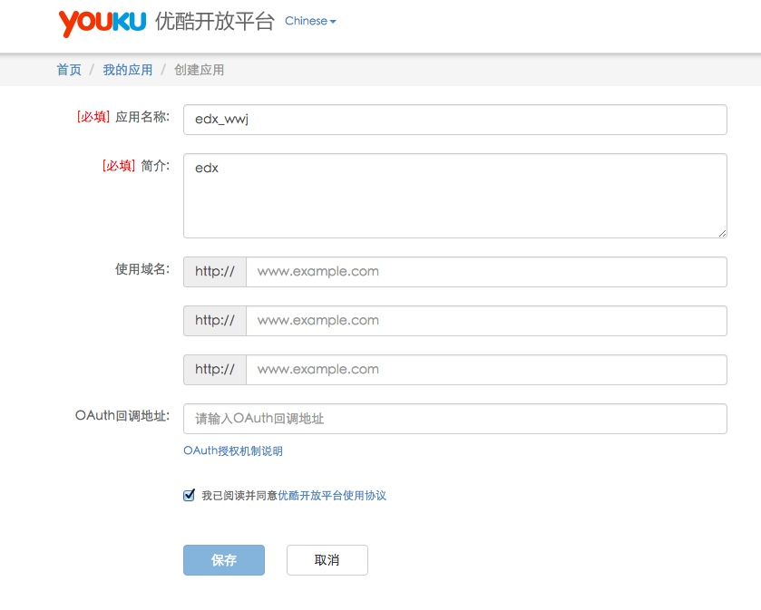

edx中视频组件
edx中的视频组件和youtube耦合得比较紧密，可惜在国内我们与此无缘。
edx中原生的视频播放器，会捕捉用户观看行为，写入到track log，而这些数据是edx数据可视化的来源，所以如果我们放弃这个视频组件，转而使用其他视频服务商提供的播放器，那么关于视频行为分析就只能自行移植。这是个不小的工作量。
当然目前数据可视化这一块，默认还未启用，从看得见的层面来说，弃用默认的视频播放器，并不造成实际影响。
为了使用国内视频流服务，我们需要为edx编写对应的XBlock，提供本地化的视频组件，这也算是本地化绕不开的一个问题吧。
当然我们也可以搭建自己的视频流服务器（甚至CDN），考虑到时间和成本预算，以及服务的稳定性，选择专业的服务商往往来的更划算。
国内的视频服务商
一些比较有名的视频服务商包括：优酷，土豆，腾讯云，保利威视,CC视频之类的，此外七牛云，又拍云这类云存储也很适合用来存储视频的。
个人而言,我很喜欢七牛云,良心企业 ^_^
就在线教育而言，保利威视和CC视频针对教育提供了不少实用的功能,值得关注
针对优酷的XBlock（youkuXBlock）
我在此要分享的XBlock是针对优酷的
当然企业级用户可能会更倾向于腾讯云，腾讯云的XBlock这周末估计可以写完（预计会集成到edx国内社区版中），到时候与edx社区版一起发布
关于优酷的视频服务可以看这里
XBlock源代码看这里：youkuXBlock , 欢迎fork，欢迎pull requests ，欢迎反馈bug
具体的使用和安装，项目主页有，在此介绍下使用说明
使用说明
我们假设你已经在edx中装好了相应组件，也做好了相关配置，如果还没有，请参考项目主页:youkuXBlock
首先你得有一个优酷账号。
然后上传视频:
上传好之后，获得视频id（vid），稍后要填写到youkuXBlock组件里

接下来去优酷开放平台，注册一个应用（有免广告之类的可选功能(付费)）

记下client_id,之后要填写到xblock中
去studio里填写参数
保存发布，大功告成
定制性
优酷的定制性还挺好的，有时间可以深度定制一下：
计划
优酷免广告的费用并不便宜，我之后可能会针对保利威视做更深度的定制，目前对保利威视只做了基础版，计划中的功能包括在课程中插入题目，弹幕，数据可视化之类的功能，尽量做到在一个平台内编辑（一体化，在studio中编辑），而不需要用户反复切换操作界面。技术细节可能主要涉及到token，预计业务逻辑多会用js写
此外我个人很喜欢七牛云，开发者友好，接口很棒，价格也公道，之后应该会针对七牛云写XBlock，edx中有许多存储机制默认采用了亚马逊的S3服务，其实这块很大部分可以移植到七牛云上